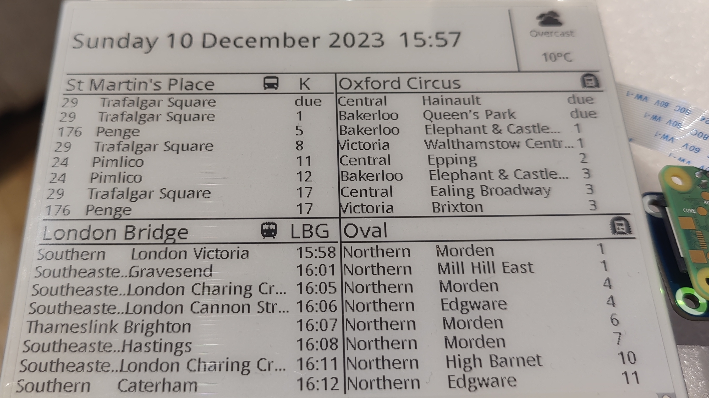

Skills
Click on a technology to highlight all references to it on the site!


About
I have always had an interest in coding, but in the last year or so I have been dedicated to learning a variety of full-stack technologies and building projects in both a professional and hobbyist capacity. I have enjoyed learning a variety of technologies and using projects as a learning tool and a way to discover new technologies. Below you can find a few examples of key projects I have worked on, and a full list of my work can be found on my GitHub profile.
Alongside coding and web development, my hobbies include gaming, photography, and board games.
Projects

This page!
Naturally this page itself is one of my most important personal projects. This page is designed to show off my front-end skills in HTML, CSS, and JavaScript. Although there are many templates for excellent-looking personal portfolios out there, I have decided to build my portfolio from scratch. This has offered me the most complete learning experience as I have had to work out and learn lots of techniques for myself. As my skills grow I will continue to update this page, incorporating newly learned skills and techniques.
SQL Query App
At my work I worked on a side project to build a graphical interface for our team to quickly make commonly used SQL queries to our database. This was done in Python and I began using the PySimpleGUI library for the GUI with the SQL interface handled by psycopg2. I then developed this into a web-app by using Streamlit. This was then built as a Docker image and deployed as a web-app using Kubernetes and Terraform. I also worked to implement continuous integration principles to this project.

Transport Dashboard
This was a hobby project where I built a transport dashboard to show upcoming public transport departures using a Raspberry Pi Zero and an E-Paper display. Although not a full-stack app this project taught me a lot about APIs, and Python's requests library. Publishing my project on GitHub meant that I had to make sure that the code could be configured to individual use cases and was well-documented.
Mismatched Quote Generator
This is a combination of two smaller projects of mine. When working through the FreeCodeCamp projects I made a React random quote machine. More recently I have also made a mismatched quote generator in native JavaScript as part of the Codecademy front-end course. By combining these two projects together I helped to refresh my React skills.
More Projects
Below you can find some other places where you can browse more projects that I have worked on.
Frontend Mentor
Frontend Mentor is where I have worked on a number of frontend development challenges, utilising HTML, CSS, and JS to produce frontend elements and pages from design specifications.
Codepen
Codepen provides an easy way to make and deploy small frontend projects. All of the projects here were made whilst I was working through the Freecodecamp curriculum in 2021/22.
Contributions
I have contributed to a number of repositories, working on both individual and collaborative projects. Working with others on a repo has taught me the importance of good commits, and the benefits of pull requests and code reviews.